證候學 5：風寒在脾證
作者：陳建元
一.定義、說明、如何從脈象上去分辨出是這個證候：
脈象見脾脈的第1層或第1～2層為主軸，有明顯的浮緊脈、浮弦脈或是直線狀態的脈象，再下按時直線狀態脈象反而不太明顯的，叫做風寒在脾證，風寒在脾證可以伴隨遲脈或不伴隨遲脈。風寒在脾證，是指病機為外感風寒邪氣，逗留於脾系的意思。如〈圖2286〉、〈圖2287〉、〈圖2288〉、〈圖2289〉、〈圖2290〉、〈圖2291〉、〈圖2292〉、〈圖2293〉、〈圖2294〉、〈圖2295〉、〈圖2296〉、〈圖2297〉這一些都是。
二.風寒在脾證的外候
脾系外感風寒病邪，影響腸胃、脾系的正常生理運作，所以風寒在脾證的外候表現為食慾不振、不思食、脹氣、消化不良、腹痛、腹脹、腹悶、腹中抽痛、胃食道逆流、口腔出現潰瘍、便祕或軟便腹瀉、手腳無力、倦怠乏力、頭暈乏力、宿有的濕疹疾病突然加重、宿有的癬疾突然加重、脾脈浮，臨床上若是看到這一系列外候特徵表現時（一項～多項），便要意識到有〝風寒在脾證〞的存在，另外要注意的是，有時候當風寒在脾證只是餘邪或是病人正氣不足的時候，雖然在外候上的食慾不振、不思食、脹氣、消化不良、腹痛、腹脹、腹悶、腹中抽痛、胃食道逆流、口腔出現潰瘍、便祕或軟便腹瀉、手腳無力、倦怠乏力、頭暈乏力、宿有的濕疹疾病突然加重、宿有的癬疾突然加重，並不是表現得很明顯，但只要脾脈上有那個脈象的存在，仍然要當成有風寒在脾證來看待。
三.這個病機常在哪些病種中見到：
風寒在脾證，可以在多種疾病中見到，其外候的表現與和治療各有特點，要注意分辨：
1. 外感餘邪：→→→有時候當風寒在脾證只是一種外感餘邪或是病人正氣不足的時候，雖然在外候上的食慾不振、不思食、脹氣、消化不良、腹痛、腹脹、腹悶、腹中抽痛、胃食道逆流、口腔出現潰瘍、便祕或軟便腹瀉、手腳無力、倦怠乏力、頭暈乏力、宿有的濕疹疾病突然加重、宿有的癬疾突然加重，並不是表現得很明顯，但只要脾脈上有那個脈象的存在，仍然要當成有風寒在脾證來看待。。治用藿香、紫蘇、防風之類的藥物。
2. 腸胃型感冒：→→→外感風寒病邪在脾系，基本上就是所謂的〝腸胃型感冒〞（也即所謂的病毒性腸胃炎），脾系外感病毒，紊亂腸胃的正常運作，故或是食慾不振、不思食、脹氣、消化不良、腹痛、腹脹、腹悶、腹中抽痛、胃食道逆流、口腔出現潰瘍、便祕或軟便腹，變化不一。治用藿香、紫蘇、防風之類的藥物。
3. 腹痛、脹氣：→→→脾系外感病毒，腸胃紊亂可以引起腹痛、脹氣。治用藿香、紫蘇、防風＋陳皮、山查之類的藥物。
4. 腹瀉：→→→脾系外感病毒，腸胃紊亂可以引起腹瀉。治用藿香、紫蘇、防風＋茯苓、車前子之類的藥物。
5. 胃食道逆流：→→→有些胃食道逆流，其實是脾系受病毒染感所導致的，除掉脾系的外感病毒，胃食道逆流自然逐漸恢復。治用藿香、紫蘇、防風＋半夏、生薑之類的藥物。
6. 各種和脾系有關連性的慢性疾病突然加重：→→→各種和脾系有關聯性的慢性疾病譬如糖尿病、濕疹、癬疾……等等，如果在穩定治療的過程中，突然加重了，要先檢查脾系是否有外感入侵，外感風寒病邪在脾系，則其運作的功能降低，所以與其相關聯性的慢性疾病如糖尿病、濕疹、癬疾……等，都會突然加重而令醫者莫名其妙，治療的規則是要先解除掉脾系外感，然後再回歸治療宿疾即可。治用藿香、紫蘇、防風之類的藥物。
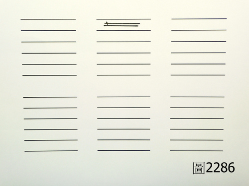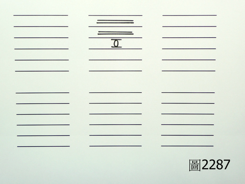
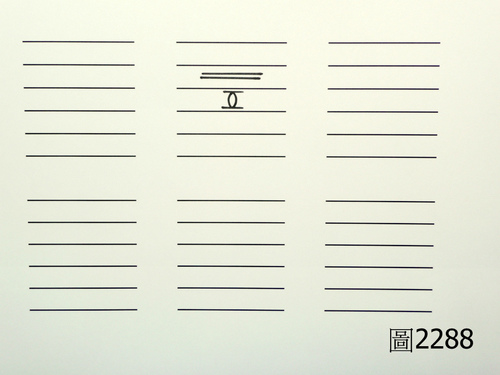
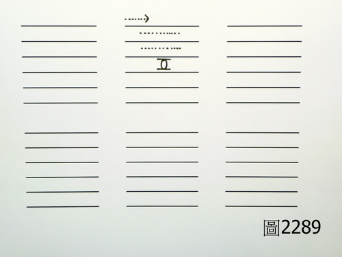
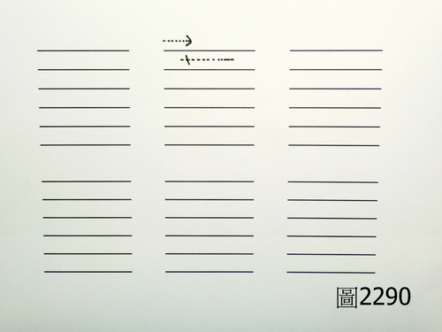
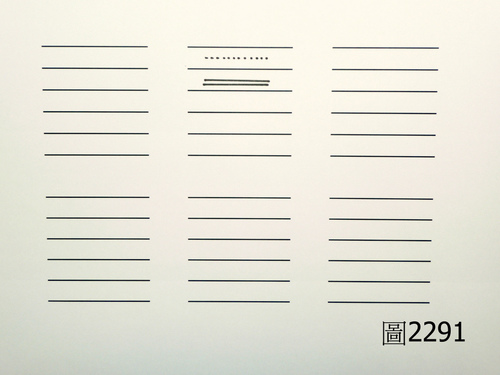
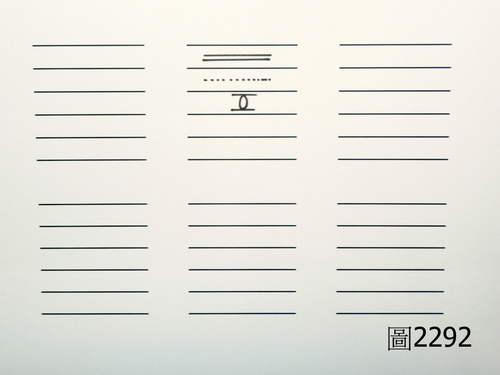
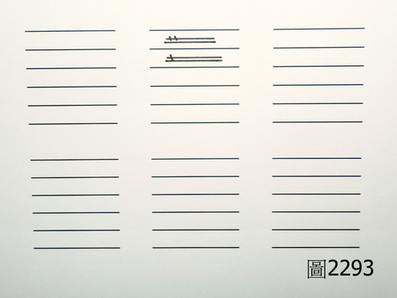
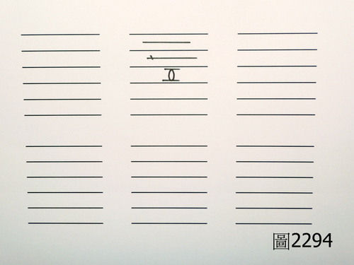
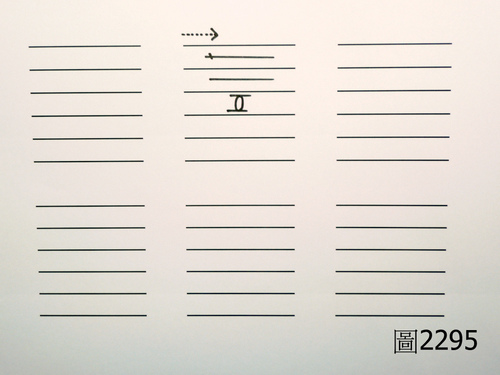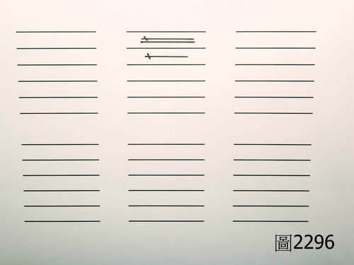
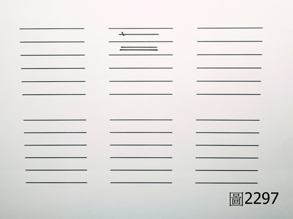
【引用請先來信告知徵求同意，若有涉及販售營利等商業行為，版權所有拷貝盜用必究。】
【藥王脈學講壇】http://blog.xuite.net/drjychen/twblog